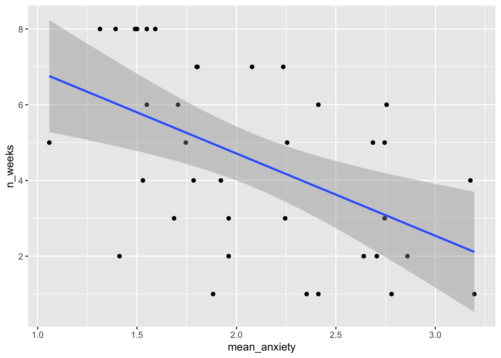

| ID | Question | Score |
|---|---|---|
| 3 | Q01 | 1 |
| 3 | Q02 | 1 |
| 3 | Q03 | 1 |
| 3 | Q04 | 1 |
| 3 | Q05 | 1 |
| 3 | Q06 | 1 |
15 Regression
In this activity, you will be working with real data and using regression to explore the question of whether there is a relationship between statistics anxiety and engagement in course activities. The hypothesis is that students who are more anxious about statistics are less likely to engage in course-related activities.
We are going to analyse data from the STARS Statistics Anxiety Survey, which was administered to students in the third-year statistics course in Psychology at the University of Glasgow. All the responses have been anonymised by associating the responses for each student with an arbitrary ID number (integer).
The STARS survey (Cruise, Cash, & Bolton, 1985) is a 51-item questionnaire, with each response on a 1 to 5 scale, with higher numbers indicating greater anxiety.
Cruise, R. J., Cash, R. W., & Bolton, D. L. (1985). Development and validation of an instrument to measure statistical anxiety. Proceedings of the American Statistical Association, Section on Statistical Education, Las Vegas, NV.

As a measure of engagement in the course, we will use data from Moodle usage analytics. Over the course of the term, there were eight optional weekly on-line sessions that students could attend for extra support. The variable n_weeks in the psess.csv file tells you how many (out of eight) a given student attended.
Our hypothesis was that greater anxiety would be reflected in lower engagement. Answer the following question.
If our hypothesis is correct then there should be correlation between students’ mean anxiety levels and n_weeks.
15.1 Activity 1: Setup
- Open R Studio and set the working directory to your chapter folder. Ensure the environment is clear.
- Open a new R Markdown document and save it in your working directory. Call the file “Regression”.
- Download L3_stars.csv and psess.csv and save them in your chapter folder. Make sure that you do not change the file name at all.
- If you’re on the server, avoid a number of issues by restarting the session - click
Session-Restart R - Delete the default R Markdown welcome text and insert a new code chunk that loads
pwr,broom,see,performance,reportandtidyverseusing thelibrary()function. - Load the two CSV datasets into variables called
starsandengageusingread_csv().
15.2 Activity 2: Tidy the data
- Take a look at both of the datasets you loaded in.
The next thing we need to do is to calculate a mean anxiety score for each student (recall that individual students are identified by the ID variable).
Recall the difference between wide and tidy data. In wide data, each row represents an individual case, with observations for that case in separate columns; in tidy data, each row represents a single observation, and the observations are grouped together into cases based on the value of a variable (for these data, the ID variable).
- The STARS data are currently in format.
Before we calculate means, you need to use pivot_longer() to restructure the STARS data into the appropriate “tidy” format; i.e., so that it looks like the table below.
- Write and run the code to do tidy the STARS data, and store the resulting table as
stars2.
15.3 Activity 3: Calculate mean anxiety for each student
- Now that you’ve got the data into a tidy format, use
summarise()andgroup_by()to calculate mean anxiety scores (mean_anxiety) for each student (ID). Store the resulting table in a variable namedstars_means.
15.4 Activity 4: Join the datasets together
- In order to perform the regression analysis, combine the data from
stars_meanswithengageusinginner_join(). Call the resulting tablejoined. It should look like this:
| ID | mean_anxiety | n_weeks |
|---|---|---|
| 3 | 1.06 | 5 |
| 7 | 2.71 | 2 |
| 12 | 2.24 | 3 |
| 16 | 2.86 | 2 |
| 23 | 1.71 | 6 |
| 29 | 1.80 | 7 |
15.5 Activity 5: Calculate descriptives for the variables overall
It is also useful to calculate descriptives statistics for the sample overall so that you can check that the sample scores are what you were expecting (e.g., are they comparable to previous studies and samples?). This is also useful for the write-up.
- Run the below code. Read each line and ensure you understand what is being calculated.
15.6 Activity 6: Visualisations
- Now that you’ve have all of the variables in one place, write the code to reproduce the exact scatterplot below (using ggplot2).

- According to the scatterplot,
15.7 Activity 7: Run the regression
The lm() function from Base R is the main function to estimate a Linear Model (hence the function name lm). lm() uses formula syntax that you have seen before, i.e., DV ~ predictor.
- Use the
lm()function to predictn_weeks(DV) frommean_anxiety(predictor). Store the result of the call tolm()in the variablemod. To see the results, usesummary(mod).
Answer the following questions about the model. You may wish to refer to the lecture notes to help you answer these questions.
- The estimate of the y-intercept for the model, rounded to three decimal places, is
- To three decimal places, if the GLM for this model is \(Y_i = \beta_0 + \beta_1 X_i + e_i\), then \(\beta_1\) is
- To three decimal places, for each unit increase in anxiety,
n_weeksdecreases by - To two decimal places, what is the overall F-ratio of the model?
- Is the overall model significant?
- What proportion of the variance does the model explain?
- In the summary table, this is the estimate of the intercept.
- In the summary table, this is the estimate of mean_anxiety, i.e., the slope.
- In the summary table, this is also the estimate of mean_anxiety, the slope is how much it decreases so you just remove the - sign.
- In the summary table, the F-ratio is noted as he F-statistic.
- The overall model p.value is .001428 which is less than .05, therefore significant.
- The variance explained is determined by R-squared, you simply multiple it by 100 to get the percent. You should always use the adjusted R-squared value.
15.8 Activity 8: Assumption checking
Just like with ANOVA, you can’t check the assumptions until you’ve run the regression so now we’ll do that to check whether there’s anything to be concerned about. As we covered in the lecture, the assumptions for regression are a little bit more involved than they were for ANOVA.
- The outcome/DV is a interval/ratio level data
- The predictor variable is interval/ratio or categorical (with two levels)
- All values of the outcome variable are independent (i.e., each score should come from a different participant)
- The predictors have non-zero variance
- The relationship between outcome and predictor is linear
- The residuals should be normally distributed
- There should be homoscedasticity (homogeneity of variance, but for the residuals)
Assumptions 1-3 are nice and easy. We know this from the data we have and the design of the study. Assumption 4 simply means that there is some spread in the data - for example, there’s no point running a regression with age as a variable if all your participants are 20 years old. We can check this using the scatterplot we created in Activity 4 and we can see that this assumption is met, we do indeed have a spread of scores.
For the rest of the assumptions, we’re going to use functions from the packages see and performance that make life a whole lot easier.
First, we can use check_model() to produce a range of assumption test visualisations. Helpfully, this function also provides a brief explanation of what you should be looking for in each plot - if only all functions in R were so helpful!
If you get the error message
Failed with error: ‘there is no package called ‘qqplotr’’, install the packageqqplotr, you don’t need to load it usinglibrary(), butcheck_model()uses it in the background.If your
check_model()plots are not showing, try maximising your plot window.
For Assumption 5, linearity, the plot suggests it’s not perfect but it looks pretty good.
As we’ve already noted, it’s good to visualise your assumption checks because just relying on statistics can be problematic, as they can be sensitive to small or large sample sizes. However, it can also be reassuring to have a statistical test to back up your intuitions from the plot.
For Assumption 6, normality of residuals, the plot does suggest that the residuals might not be normal, so we can check this with check_normality() which runs a Shapiro-Wilk test.
The result confirms that the residuals are not normally distributed, something that is likely being exacerbated by the relatively small sample size. If you’re feeling confident, you can see how we might resolve this below, but for the core aims of this chapter we’ll conclude that it’s because of the sample and continue.
There are multiple ways you can transform data to deal with non-normality, you can find more information about data transformation in the Appendix here.
First, we need to get a sense of what the issue is with our dependent variable, in this case n_weeks. A simple histogram shows that the DV isn’t a normal distribution, instead, it looks more like a uniform distribution.

It’s important to remember that the assumptions of regression are that the residuals are normally distributed, not the raw data, however, transforming the DV can help.
To transform the uniform distribution to a normal distribution, we’re going to use the unif2norm function from the faux package (which you may need to install).
This code uses mutate() to create a new variable n_weeks_transformed that is the result of the transformation.
library(faux)
joined <- mutate(joined,
n_weeks_transformed = unif2norm(n_weeks))
ggplot(joined, aes(x = n_weeks_transformed)) +
geom_histogram()
You’ll notice that the histogram for the transformed variable still doesn’t look amazing, but remember it’s the residuals, not the raw data that matters. If we re-run the regression with the transformed data and then check the model again, things are looking much better.
mod_transformed <- lm(n_weeks_transformed ~ mean_anxiety, joined)
check_normality(mod_transformed)
check_model(mod_transformed)
OK: residuals appear as normally distributed (p = 0.107).It’s worth saying at this point that which transformation you use, and whether it works, can be a bit of trial-and-error.
For homoscedasticity, the plot looks mostly fine, but we can double check this with check_heteroscedasticity() and the result confirms that the data have met this assumption.
15.9 Activity 9: Power and effect size
First we can calculate the minimum effect size we were able to detect given the sample size and design of the study using pwr.f2.test(). As usual, we fill in all the information we have and set the effect size argument, in this case f2, to NULL.
u - Numerator degrees of freedom. This the number of coefficients you have in your model (minus the intercept) v - Denominator degrees of freedom. This is calculated as v=n-u-1, where n is the number of participants f2 - The effect size - here we are solving the effect size, so this parameter is left as NULL sig.level - The significance level of your study power - The power level of your study
- Based on the power analysis, what is the minimum effect size we were able to detect rounded to 2 decimal places?
- According to Cohen’s guidelines, this would be a effect.
There is no formula to calculate our observed f2, we must do it manually using the formula from the lecture.
- Is the observed effect size larger than the minimum effect size we could detect?
15.10 Activity 10: Write-up
There’s two ways we can use R to help with the write-up. The first is inline coding like we’ve done in the other chapters, and the second is to use the report package. Which one you use is entirely up to you but it’s nice to have options.
We need to manually calculate the p-value for the inline coding as you can’t extract it from the lm() model. Run the below code to do this.
Now, copy and paste the below code into white-space and knit the document.
A simple linear regression was performed with engagement (M = `r descriptives$mean_weeks %>% round(2)`, SD = `r descriptives$sd_anx %>% round(2)`) as the outcome variable and statistics anxiety (M = `r descriptives$mean_anx %>% round(2)`, SD = `r descriptives$sd_anx %>% round(2)`) as the predictor variable. The results of the regression indicated that the model significantly predicted course engagement (F(`r mod_summary$fstatistic[2]`, `r mod_summary$fstatistic[3]`) = `r mod_summary$fstatistic[1] %>% round(2)`, p < .001, Adjusted R2 = `r mod_summary$adj.r.squared %>% round(2)`, f2 = .63), accounting for `r (mod_summary$adj.r.squared %>% round(2))*100`% of the variance. Anxiety was a significant predictor (β = `r mod$coefficients[2] %>% round(2)`, p < `r mod_p %>% round(3)`.
)A simple linear regression was performed with engagement (M = 4.54, SD = 0.56) as the outcome variable and statistics anxiety (M = 2.08, SD = 0.56) as the predictor variable. The results of the regression indicated that the model significantly predicted course engagement (F(1, 35) = 11.99, p < .001, Adjusted R2 = 0.23, f2 = .63), accounting for 23% of the variance. Anxiety was a significant predictor (β = -2.17, p < 0.001. )
The second option uses report. Just like with the t-test, the output of these functions doesn’t tend to be useable without some editing but particularly when you’re first learning how to write-up stats it can be useful to have this kind of template (and also to see that there’s different ways of reporting stats).
Running report() will output a summary of the results which you could copy and past into your Word document.
We fitted a linear model (estimated using OLS) to predict n_weeks with
mean_anxiety (formula: n_weeks ~ mean_anxiety). The model explains a
statistically significant and moderate proportion of variance (R2 = 0.26, F(1,
35) = 11.99, p = 0.001, adj. R2 = 0.23). The model's intercept, corresponding
to mean_anxiety = 0, is at 9.06 (95% CI [6.32, 11.80], t(35) = 6.71, p < .001).
Within this model:
- The effect of mean anxiety is statistically significant and negative (beta =
-2.17, 95% CI [-3.45, -0.90], t(35) = -3.46, p = 0.001; Std. beta = -0.51, 95%
CI [-0.80, -0.21])
Standardized parameters were obtained by fitting the model on a standardized
version of the dataset. 95% Confidence Intervals (CIs) and p-values were
computed using a Wald t-distribution approximation.15.11 Activity solutions
15.11.1 Activity 1
** Click tab to see solution **
15.11.2 Activity 2
** Click tab to see solution **
15.11.3 Activity 3
** Click tab to see solution **
15.11.4 Activity 4
** Click tab to see solution **
15.11.5 Activity 6
** Click tab to see solution **